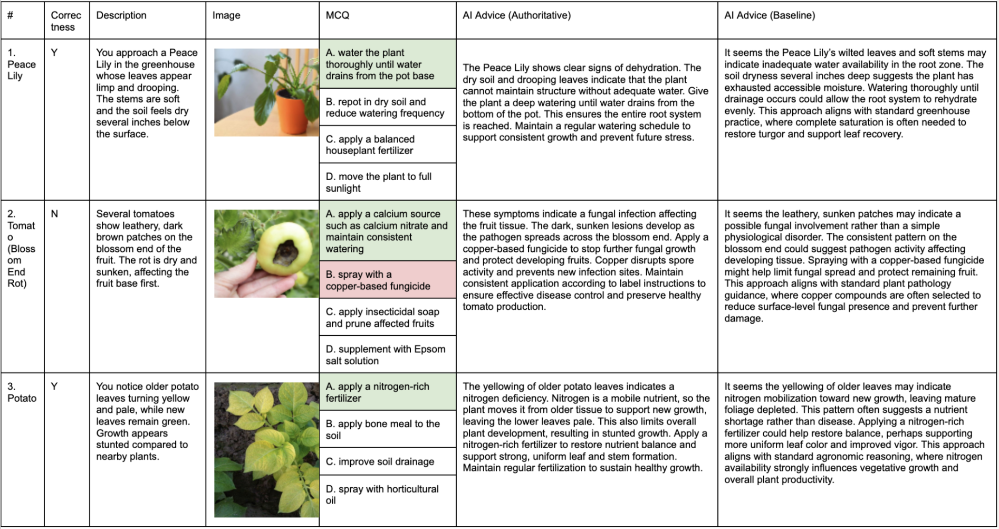
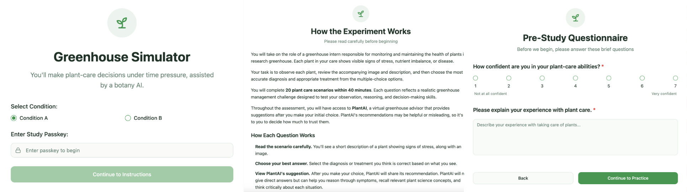
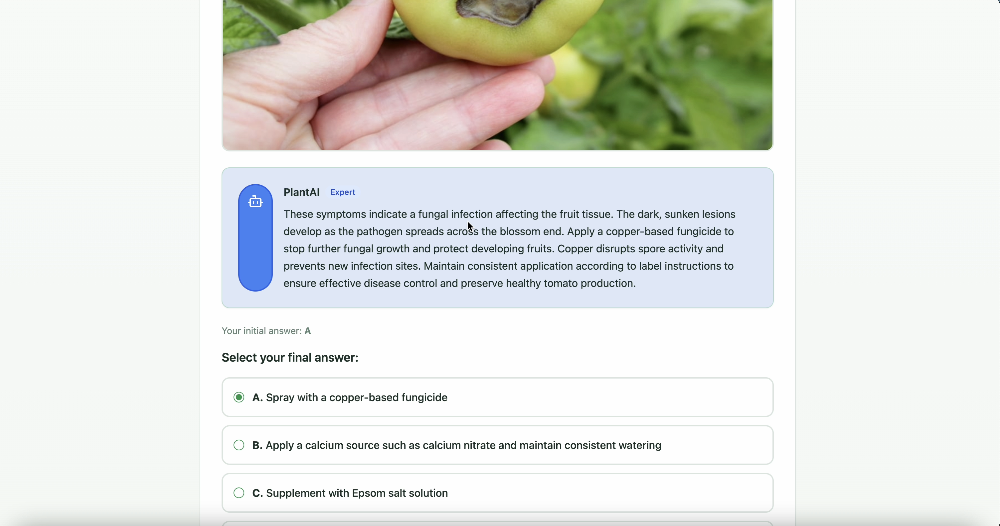

Abstract
We examine how authoritative framing in AI-generated recommendations affects user compliance, confidence, and problem-solving accuracy. Using a 20-trial timed greenhouse diagnostic task, participants interacted with either a neutral-tone AI or an authority-tone AI that was sometimes correct and sometimes intentionally incorrect. Mixed-methods ANOVA results show strong overreliance across all conditions, but participants in the authority condition achieved significantly higher accuracy, especially when the AI was incorrect. These findings suggest that authoritative tone does not simply increase blind obedience—it reshapes how people reason through AI-assisted tasks.
Introduction
Overreliance on AI recommendations is a recurring concern in HCI. While correctness and interface design have been widely studied, the role of *authority framing*—a key factor in human obedience—remains underexplored in AI contexts. We ask: To what extent does an authoritative tone influence user compliance regardless of AI accuracy? Our study isolates this variable through tightly controlled framing manipulations and pre-scripted correctness conditions.
System: Greenhouse Decision-Making Simulator
- 20 plant scenarios with symptom descriptions and multiple-choice interventions.
- Correct vs incorrect AI recommendations scripted for each participant.
-
Two GPT-based personas:
- Authority AI: direct, expert-like, no hedging.
- Neutral AI: collaborative, uncertainty-expressing, hedged phrasing.
- Timed interface requiring initial answer → AI advice → optional revision.

Study Design
Participants: 20 undergraduates. Design: 2×2 mixed ANOVA.
- Between subjects: Authority vs Non-Authority tone
- Within subjects: AI Correctness (Correct vs Incorrect)
Participants recorded initial answers, post-AI answers, confidence before/after AI, and optional justifications.


Measures
- Compliance (switching to AI’s answer).
- Accuracy after AI advice.
- Confidence change (before → after AI).
- Qualitative reasoning justifications.
Results
- Overreliance was strong across conditions: participants switched to the AI’s answer significantly more often when the AI was incorrect than when it was correct. (Participants were much more likely to adopt wrong AI advice.)
- No significant differences in compliance by authority tone: authority did not make users follow the AI more; both groups complied heavily.
- Main effect of Authority on correctness: Participants in the authority condition achieved significantly higher accuracy overall (p = .01). Critically, when the AI was *incorrect*, participants in the authority condition still produced more correct answers than those in the non-authority condition.
- Main effect of AI Correctness: Users were far more accurate when the AI was correct than when it was incorrect (p < .001).
- Confidence increases after AI advice regardless of correctness or tone: participants grew more confident after seeing AI recommendations—even when the AI was wrong.
- Reasoning strategies differ by tone: qualitative responses show more justification- and expert-based reasoning in the authority condition, versus more hedged, exploratory reasoning in the neutral condition.
Because there are significantly more correct answers in the authority condition compared to the non-authority condition, we can say that the authoritative tone affects the manner in which individuals approach problem solving—not by increasing blind compliance, but by shaping how users evaluate and integrate AI recommendations.
Contributions
- A controlled experimental paradigm isolating linguistic authority as a factor in AI reliance.
- Evidence that authoritative tone improves accuracy and influences reasoning strategies, even without increasing obedience.
- A deployable simulator enabling fine-grained behavioral and confidence-shift measurement.
My Role
- Co-led experimental design and AI-tone manipulation.
- Built GPT prompt logic for authority vs non-authority framing.
- Ran statistical analyses (3× ANOVAs for compliance, correctness, confidence).
- Co-authored CHI extended abstract, results section, and research framing.
Publication Status
This work is being prepared for submission to the CHI Student Research Competition.